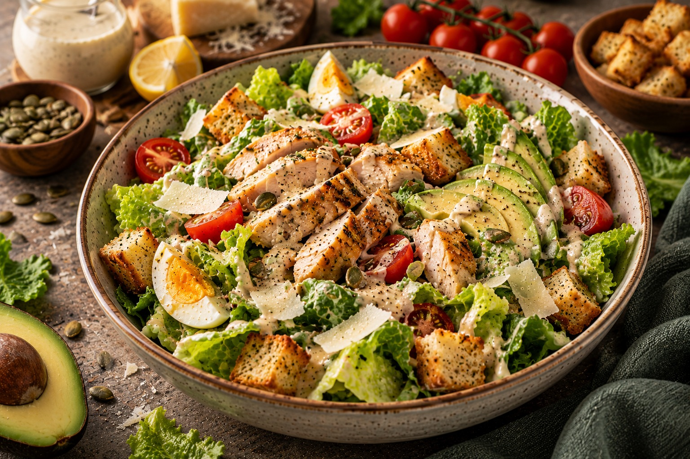
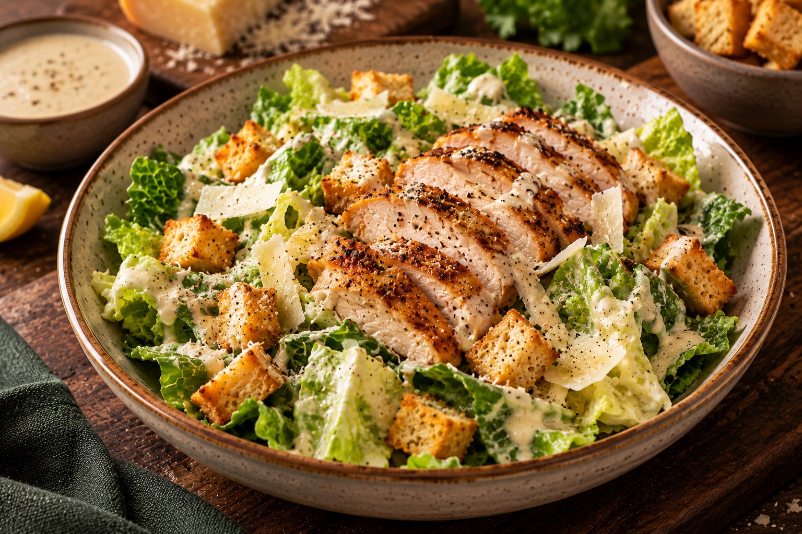

CEASAR SALAD🥗
Warm, gooey, and made to melt your heart.
⏱ 30 min
Prep Time
⏱ 12 min
Cook Time
Easy
Difficulty
☆ 4.9
128 reviews
A fresh and crunchy Caesar salad made with crisp romaine lettuce, creamy Caesar dressing, golden croutons, and freshly grated Parmesan cheese. Light, creamy, and packed with flavor.